先看主线，再背公式，最后做题
每个专题页都按“概念框架、公式变量、典型题型、原讲义对照、自测问题”组织。复习时从左侧目录跳转，遇到计算题直接回到高亮公式段。
把流水线当成“时空图 + 三类冲突 + 性能公式 + 非线性调度”来复习。考试重点通常不是背概念，而是会画、会算、会判断停顿。
每个专题页都按“概念框架、公式变量、典型题型、原讲义对照、自测问题”组织。复习时从左侧目录跳转，遇到计算题直接回到高亮公式段。
15 页原讲义截图可展开核对，适合考前查原表、原图和例题。
正文已经把知识点重新组织；这里保留讲义页面缩略图，方便你在需要时回看原版题目、图和表。
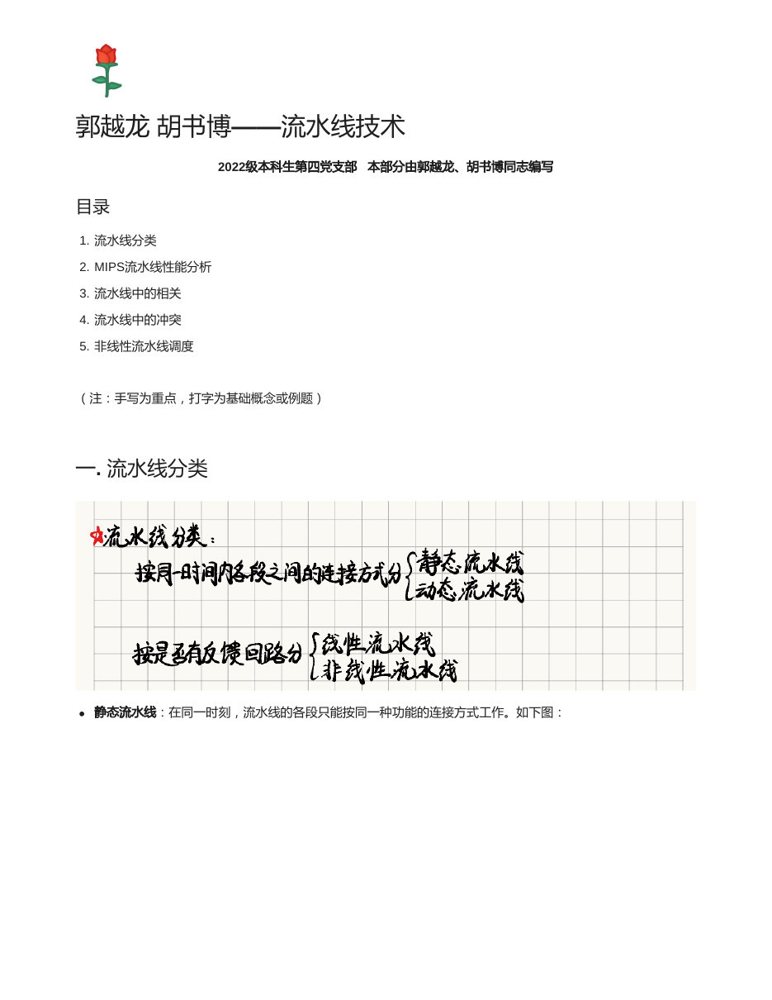
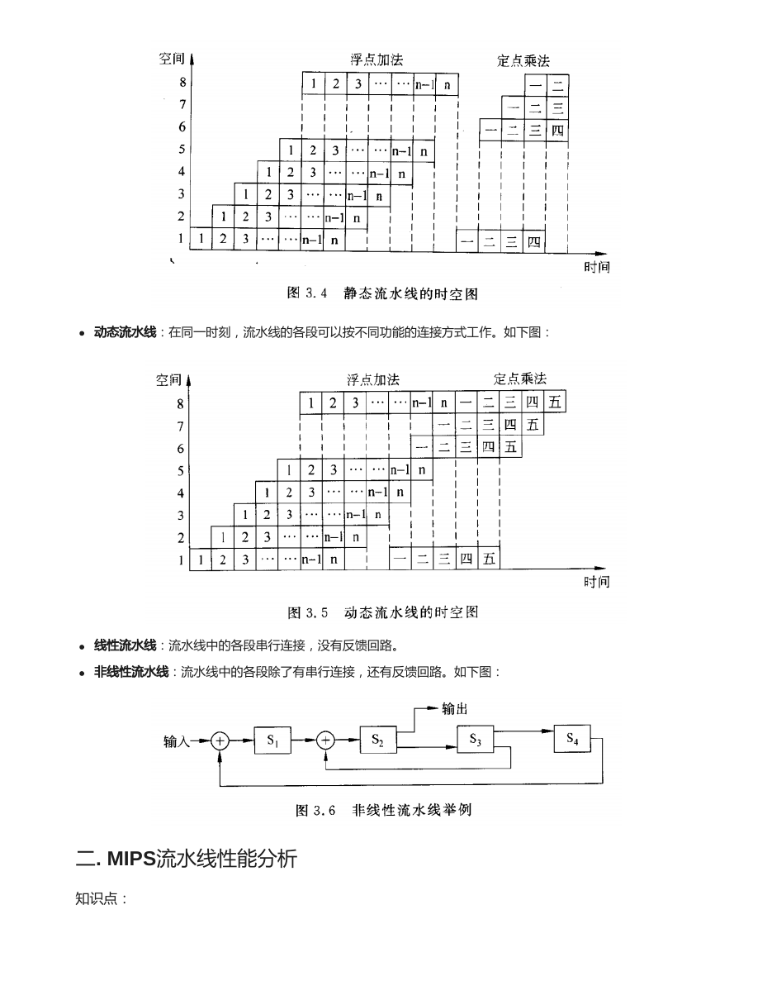
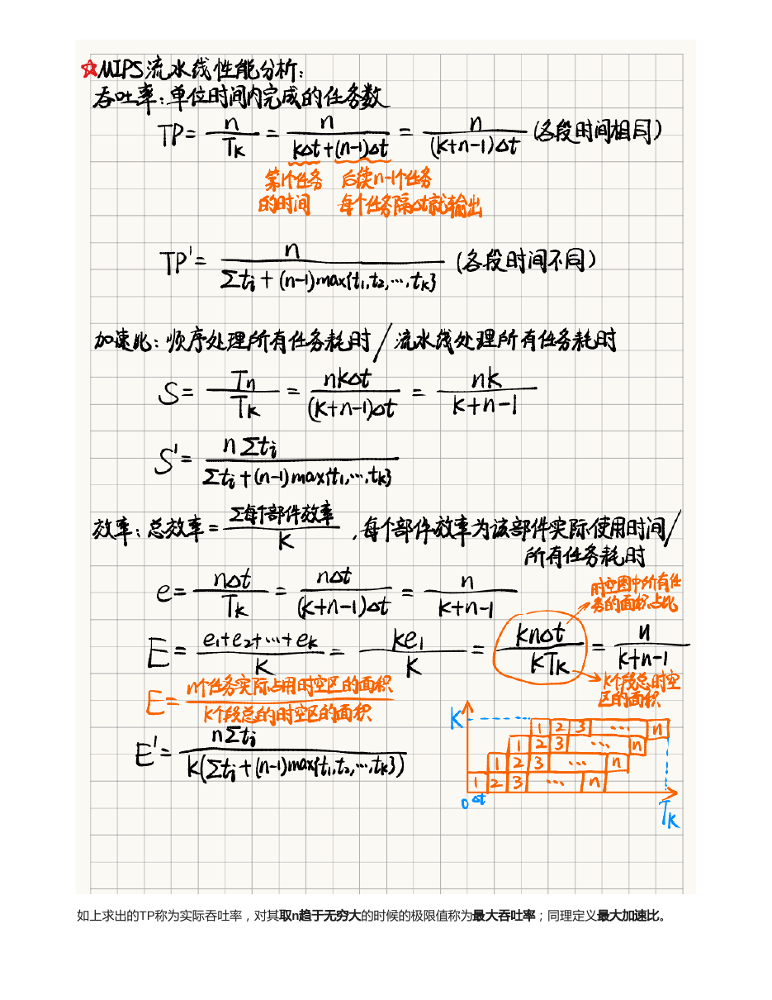
| 分类角度 | 类型 | 含义 |
|---|---|---|
| 功能连接是否固定 | 静态流水线 | 同一时刻各段只能按一种功能连接方式工作。 |
| 功能连接是否固定 | 动态流水线 | 同一时刻不同段可以按不同功能连接方式工作，控制更复杂。 |
| 是否有反馈回路 | 线性流水线 | 任务依次经过各段，每段最多经过一次。 |
| 是否有反馈回路 | 非线性流水线 | 存在反馈回路，一个任务可能多次使用某些功能段。 |
流水线性能题先判断是否是简单线性流水线。如果各段时间相等，用等时公式；如果各段时间不等，用最长段作为节拍。
| 阶段 | 名称 | 主要工作 |
|---|---|---|
| IF | 取指 | 用 PC 访问指令存储器，取出指令，通常 PC + 4。 |
| ID | 译码/读寄存器 | 译码、读寄存器、生成控制信号，部分实现会在此处理分支。 |
| EX | 执行 | ALU 运算、地址计算、条件判断。 |
| MEM | 访存 | Load/Store 访问数据存储器。 |
| WB | 写回 | 把结果写回寄存器堆。 |
画时空图时要把每条指令在每个周期处于哪个阶段标清楚，再根据相关关系判断是否插入气泡、重定向或清空。
指令之间存在语义关系，包括数据相关、名相关、控制相关。相关是“原因”。
由于相关或资源不足，下一条指令无法在预定周期执行。冲突是“流水线中的后果”。
| 冲突类型 | 来源 | 解决思路 |
|---|---|---|
| 结构冲突 | 同一周期多条指令争用同一硬件资源。 | 资源重复、分离指令/数据存储、插入停顿。 |
| 数据冲突 | 指令之间读写寄存器或内存的顺序受约束。 | 数据重定向、插入气泡、编译器调度、寄存器重命名。 |
| 控制冲突 | 分支、跳转改变 PC，后续取指方向不确定。 | 分支预测、分支延迟槽、提前判断、错误路径清空。 |
| 名称 | 必须保持的顺序 | 直觉记忆 | MIPS 五段流水线中 |
|---|---|---|---|
| RAW 写后读 | 前一条先写，后一条再读。 | 真正的数据依赖，最常见。 | 会发生，常用重定向解决。 |
| WAR 读后写 | 前一条先读，后一条再写。 | 名相关，不是真数据流。 | 读在 ID、写在 WB，通常不会发生。 |
| WAW 写后写 | 前一条先写，后一条再写。 | 输出相关。 | 五段顺序写回时通常不发生，乱序/多功能部件中要注意。 |
重定向一般从 EX/MEM、MEM/WB 流水寄存器把结果送回 ALU 输入端。但 Load-Use 情况下，数据到 MEM 后才可用，紧接着的下一条指令 EX 阶段太早，通常仍需插入 1 个气泡。
非线性流水线因为存在反馈，同一任务可能重复使用某段，所以不能随便每周期输入新任务。调度目标是在不发生功能段冲突的前提下，让平均启动间隔尽量小。
资料例题中的禁止表为 F = {1, 5, 6, 8}，对应初始冲突向量 C0 = 10110001。考试遇到类似题，按这四步机械推进即可。
| 场景 | 公式 | 说明 |
|---|---|---|
| 等时 k 段，n 个任务 | Tk = (k + n - 1)Δt | kΔt 是第一个任务完成时间，后续每 Δt 完成一个。 |
| 不等时 k 段 | Tk = Σti + (n - 1)max(ti) | 节拍由最慢段决定。 |
| 吞吐率 | TP = n / Tk | n 趋于无穷大时，最大 TP = 1/Δt 或 1/max(ti)。 |
| 加速比 | S = T顺序 / T流水 | 等时顺序时间通常为 nkΔt。 |
| 效率 | E = 有效时空面积 / 总时空面积 | 等时理想线性流水线 E = n / (k + n - 1)。 |
5 段流水线，每段 10ns，处理 20 个任务。
资料例题预约表得到禁止表 F = {1, 5, 6, 8}，初始冲突向量 C0 = 10110001。
要在图示静态流水线上计算 Π(i=1..4)(Ai + Bi)，流水线输出可以直接返回输入端或暂存于相应流水寄存器中。试计算吞吐率、加速比和效率。
练习重点：先安排 4 次加法，再安排乘法树，最后由时空图统计总时间和阴影面积。
原资料时空图给出 18Δt 内输出 7 个结果，所以 TP = 7/(18Δt)。不用流水线时总时间为 (4 x 6 + 3 x 4)Δt = 36Δt，所以 S = 36/18 = 2。
效率按阴影面积与总时空面积计算：E = (4 x 6 + 3 x 4)/(8 x 18) = 0.25。
一条动态多功能流水线由 5 段组成：加法使用 1、3、4、5 段；乘法使用 1、2、5 段；第 4 段时间为 2Δt，其余各段时间均为 Δt，且输出可直接返回输入端或暂存于流水寄存器中。
若计算 Σ(i=1..4)(Ai x Bi)，试计算吞吐率、加速比和效率。
原资料时空图给出 16Δt 内输出 7 个结果，所以 TP = 7/(16Δt)。不用流水线时，一次求积需 3Δt，一次求和需 5Δt，总时间为 (4 x 3 + 3 x 5)Δt = 27Δt。
加速比 S = 27/16 ≈ 1.69；效率 E = (4 x 3 + 3 x 5)/(5 x 16) ≈ 0.338。
在 MIPS 五段流水线中运行如下循环，R3 初始值为 R2 + 396；假设所有存储器访问都命中 Cache。
LOOP: LW R1, 0(R2)
ADDI R1, R1, #1
SW 0(R2), R1
ADDI R2, R2, #4
SUB R4, R3, R2
BNZ R4, LOOP循环次数为 396/4 = 99。无定向时，原资料给出每轮 15 个时钟周期，总周期数为 15 x 99 + 3 = 1488。
有定向且预测分支失败时，每轮 9 个时钟周期，总周期数为 9 x 99 + 3 = 894。
调度思路：把独立指令提前，尽量让 SW 填入分支延迟位置；具体重排序列见原资料 p.12。
给定 5 个功能段的非线性流水线预约表：S1 在时间 1、9 使用；S2 在时间 2、3、8 使用；S3 在时间 4 使用；S4 在时间 5、6 使用；S5 在时间 7、8 使用。
求禁止表 F、初始冲突向量 C0，画状态转移图，并给出平均启动间隔最小的调度方案。
同一功能段内使用时间差构成禁止表：F = {1, 5, 6, 8}。
初始冲突向量 C0 = 10110001。根据状态图，方案 (3,4) 的平均启动间隔为 3.5 个时钟周期，是较优方案。
合上正文后先试着口答，再展开看答案。能把这些问题讲清楚，本章主线基本就稳了。
相关是指令之间的语义依赖或名字关系；冲突是由于相关或资源不足导致流水线不能按预定周期推进。
后一条指令需要读取前一条尚未写回的结果，是真正的数据流依赖，可用重定向和停顿处理。
Load 的数据通常到 MEM 末尾才可用，紧随其后的使用者在 EX 阶段需要该数据，时间上来不及。
根据预约表找禁止向量，构造冲突向量和状态图，再选平均启动间隔最小且合法的循环。
启动/排空、停顿、功能段不均衡和冲突都会让部分功能段处于空闲状态。
下面是原资料的页面渲染图，正文复习完后可以展开对照图、公式和例题。
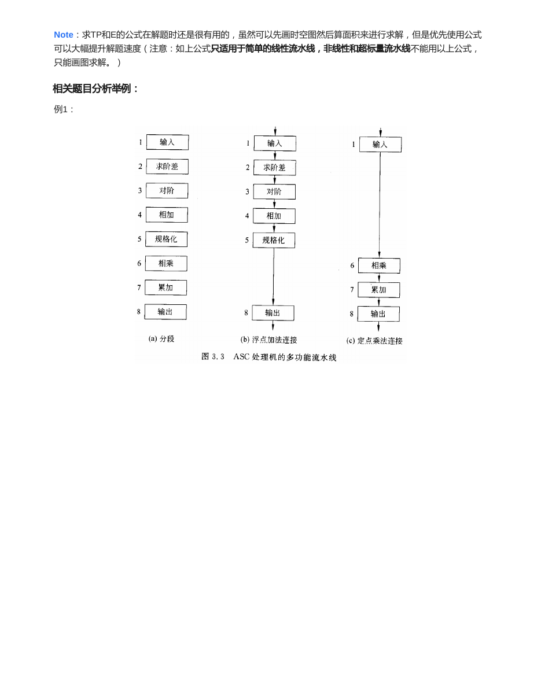
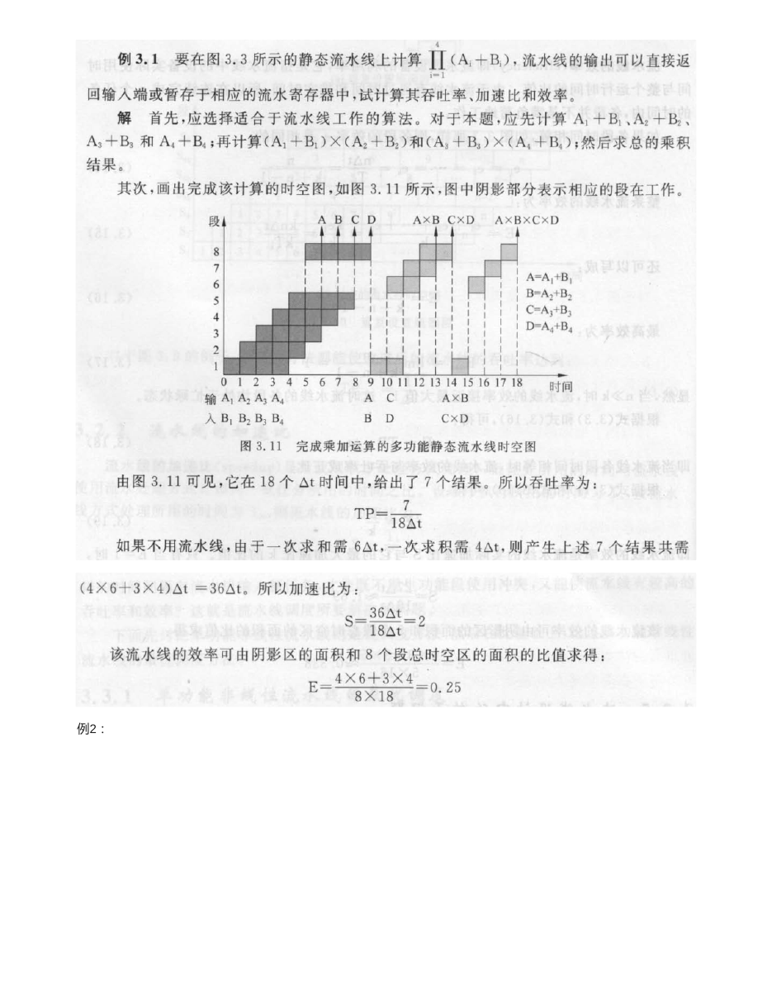
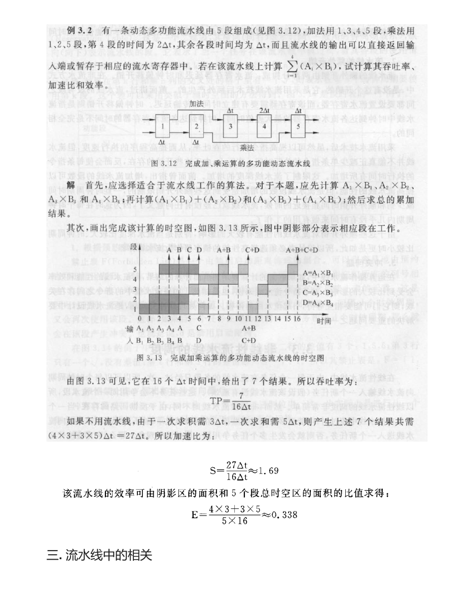
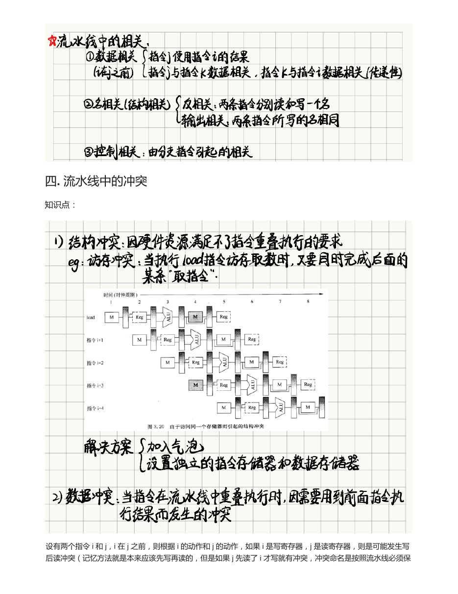
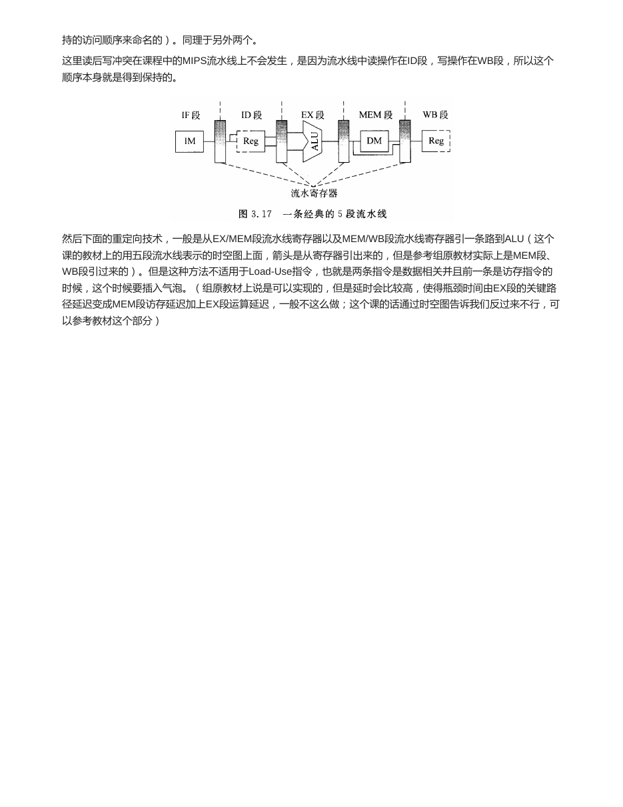
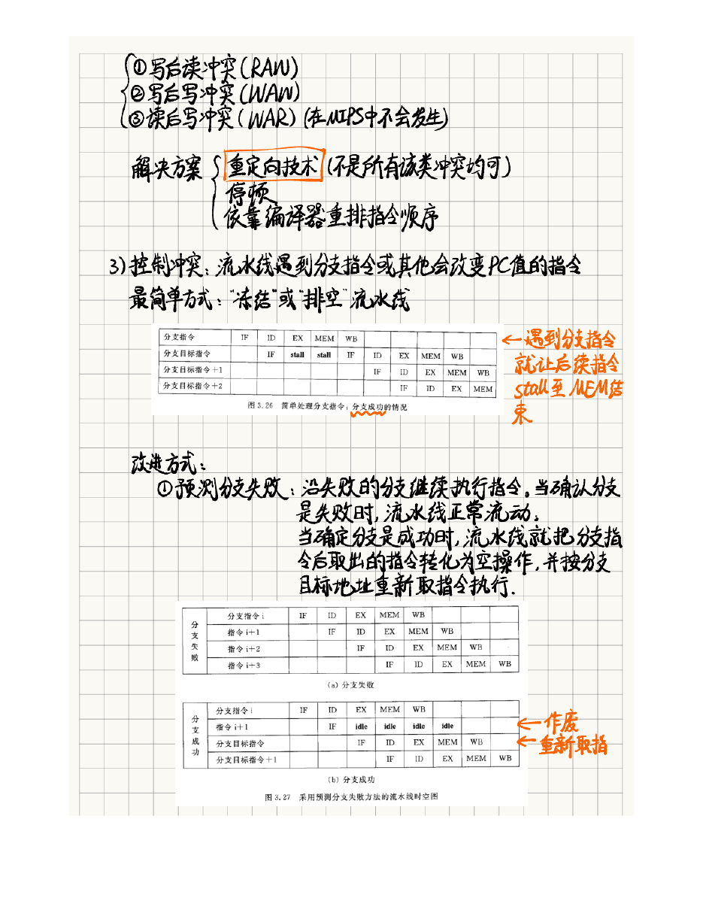
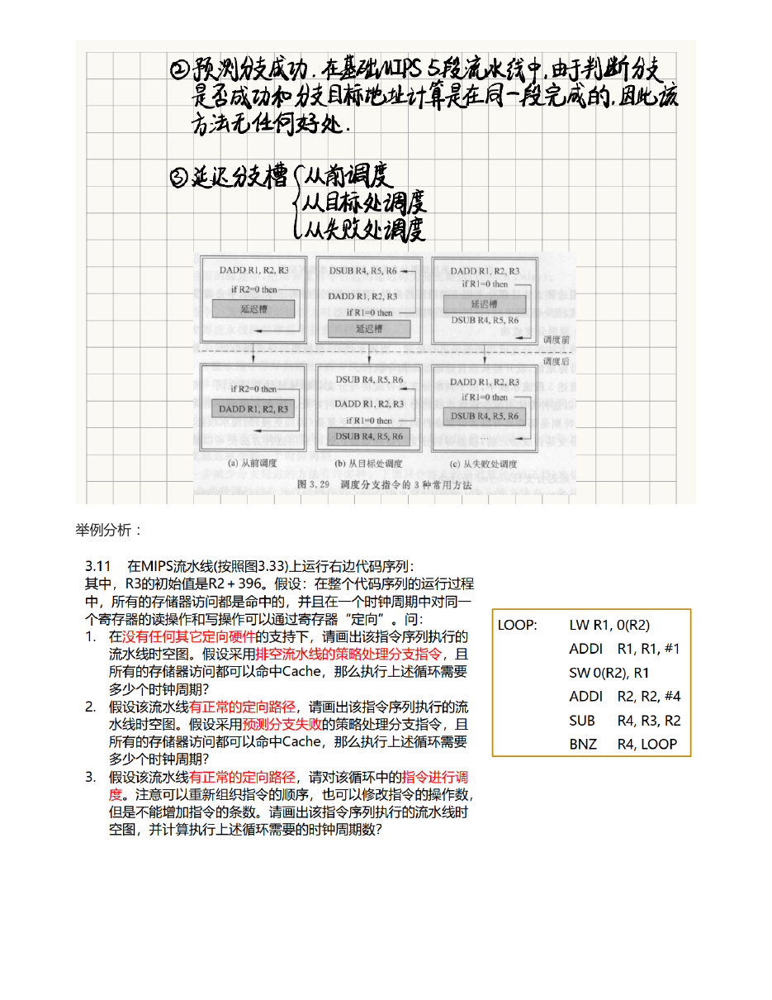
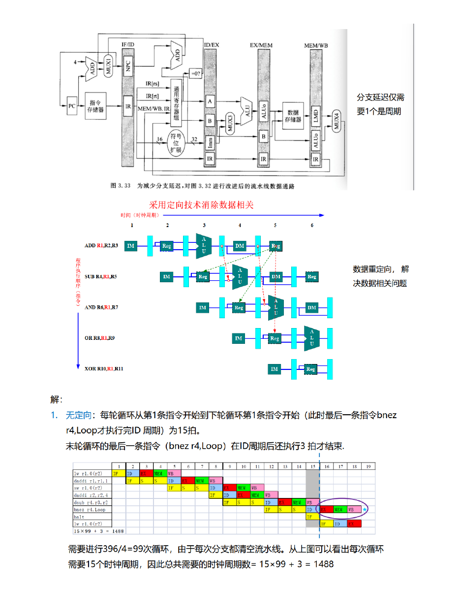
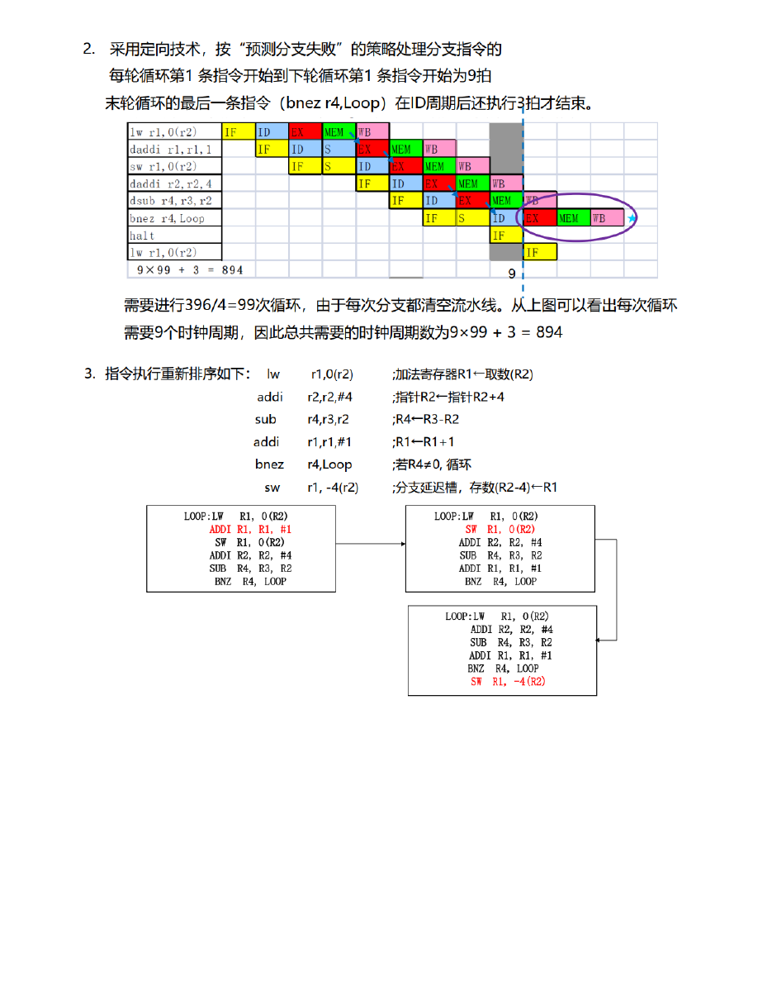
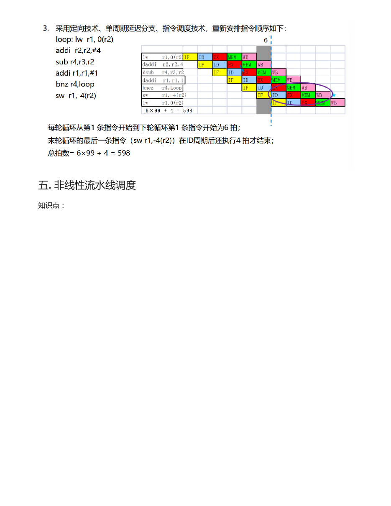
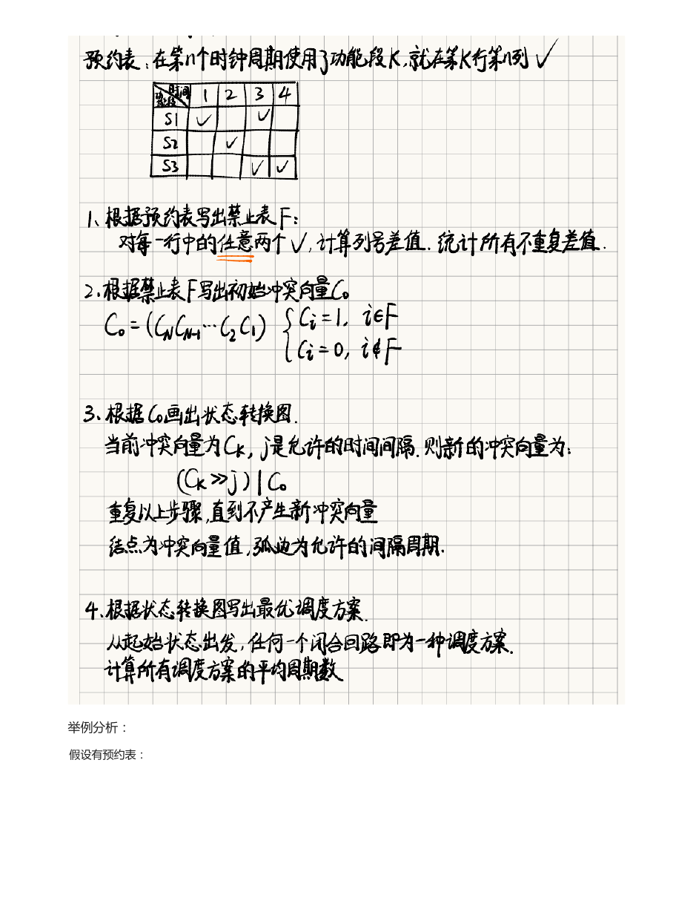
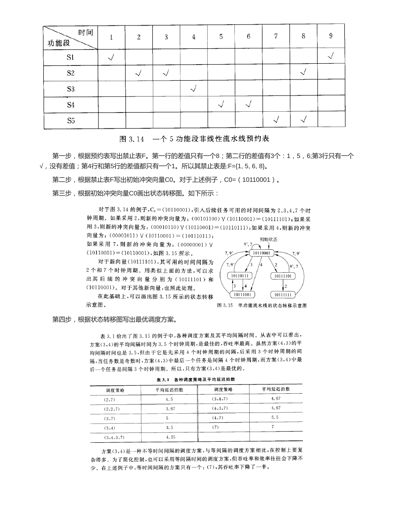
{kind=link}
{kind=link}
{kind=link}
{kind=link}
{kind=link}
{kind=link}
{kind=link}